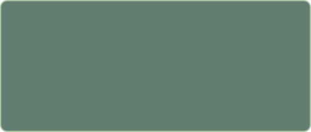

AGRICULTURE CASE STUDY / IN PROGRESS
Lettuce through winter
Exploring a small deep water culture system for more dependable local lettuce during New York’s cold months.
ROLE: Student grower / LOCATION: New York / STATUS: Research & planning
01 / The idea
Project overview
A starting point for documenting a small soil-less lettuce trial. Final project details and evidence will be added as the work develops.
Problem statement
Investigate whether a small indoor growing setup could help support a dependable local lettuce supply during New York’s colder months.
Needs assessment specifications
Who it could serve: local families, schools, and community food programs.
What the system needs: indoor growing space, water, power, light, root aeration, and a manageable budget.
Still to define: site, system size, weekly harvest goal, costs, and potential buyers or partners.
Approach
Start with a small deep water culture trial. Plan regular sowing, record plant growth and resource use, and review whether the setup is practical before expanding.
Materials list — draft
- Reservoir and floating raft
- Net pots, seedlings, and growing plugs
- Hydroponic nutrients
- Air pump, tubing, and air stone
- pH testing equipment and thermometer
- Grow light and timer; suitable indoor space
02 / How it could fit together
Illustrative planning sketches only. Final measurements and a build-ready design still need to be added.
2D design / top view

CONCEPT DIAGRAM — NOT AN AS-BUILT PLAN3D design / concept view
03 / The working documents
Farm plan
The plan will describe the site, equipment, crop schedule, costs, and intended harvest.
Open farm plan starter →
Standard Operating Procedure (SOP)
An SOP is a repeatable set of instructions. This will cover routine checks, cleaning, plant care, and recordkeeping.
Open SOP starter →
04 / What I’ll learn
Project analysis
No growing results are claimed here yet. The plan is to record growth, harvest weight, water use, time spent, and energy costs, then compare the outcome with the original goals.
Challenges to investigate
Winter heating and lighting costs; maintaining water conditions; keeping a consistent planting schedule; making lettuce affordable.
Solutions to test
Begin at a manageable scale, keep a care log, compare resource costs, and adjust the setup based on observations.
Conclusion — to revisit
Update this section with evidence from the trial, including what worked, what did not, and what should change next.
05 / Visual journal
Add dated photos as the project develops.
01 / Setup photo
PHOTO TO BE ADDED
02 / Growth photo
PHOTO TO BE ADDED
03 / Harvest photo
PHOTO TO BE ADDED